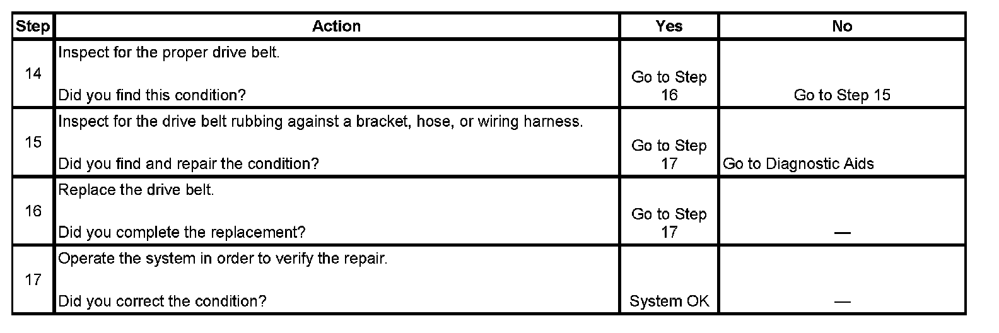

Drive Belt Falls Off and Excessive Wear Diagnosis
Drive Belt Falls Off and Excessive Wear Diagnosis
Diagnostic Aids
If the drive belt repeatedly falls off the drive belt pulleys, this is because of pulley misalignment.
An extra load that is quickly applied on released by an accessory drive component may cause the drive belt to fall off the pulleys. Verify the accessory drive components operate properly.
If the drive belt is the incorrect length, the drive belt tensioner may not keep the proper tension on the drive belt.
Excessive wear on a drive belt is usually caused by an incorrect installation or the wrong drive belt for the application.
Minor misalignment of the drive belt pulleys will not cause excessive wear, but will probably cause the drive belt to make a noise or to fall off.
Excessive misalignment of the drive belt pulleys will cause excessive wear but may also make the drive belt fall off.
Test Description
The numbers below refer to the step numbers on the diagnostic table.
2. This inspection is to verify the condition of the drive belt. Damage may of occurred to the drive belt when the drive belt fell off. The drive belt may of been damaged, which caused the drive belt to fall off. Inspect the belt for cuts, tears, sections of ribs missing, or damaged belt plys.
4. Misalignment of the pulleys may be caused from improper mounting of the accessory drive component, incorrect installation of the accessory drive component pulley, or the pulley bent inward or outward from a previous repair. Test for a misaligned pulley using a straight edge in the pulley grooves across two or three pulleys. If a misaligned pulley is found refer to that accessory drive component for the proper installation procedure of that pulley.
5. Inspecting the pulleys for being bent should include inspecting for a dent or other damage to the pulleys that would prevent the drive belt from not seating properly in all of the pulley grooves or on the smooth surface of a pulley when the back side of the belt is used to drive the pulley.
6. Accessory drive component brackets that are bent or cracked will let the drive belt fall off.
7. Inspection of the fasteners can eliminate the possibility that a wrong bolt, nut, spacer, or washer was installed. Missing, loose, or the wrong fasteners may cause pulley misalignment from the bracket moving under load. Over tightening of the fasteners may cause misalignment of the accessory component bracket.
13. The inspection is to verify the drive belt is correctly installed on all of the drive belt pulleys. Wear on the drive belt may be caused by mis-positioning the drive belt by one groove on a pulley.
14. The installation of a drive belt that is too wide or too narrow will cause wear on the drive belt. The drive belt ribs should match all of the grooves on all of the pulleys.
15. This inspection is to verify the drive belt is not contacting any parts of the engine or body while the engine is operating. There should be sufficient clearance when the drive belt accessory drive components load varies. The drive belt should not come in contact with an engine or a body component when snapping the throttle.
Step 1 - Step 13:
Step 14 - Step 17:
